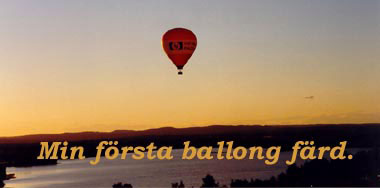
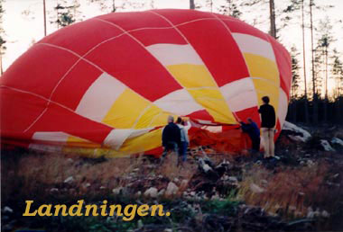

Ockelbo Ballongmöte
av Anna Skogh

Det var den 25 juli 1998 och min första ballongflygning.
Dagen innan hade varit grå och blåsig, man frågade sig då
om det verkligen skulle bli
av. Men på lördagsmorgonen
när jag slog upp mina två blå var det klarare väder. Fast
frågan fanns där: Blir det någon flygning av, eller inte??
Programmet på Wij Säteri började klockan 16.00 med att
fikaserveringen öppnade. Där fanns kaffe, bullar, bakelser
och korv för de som
önskade. Det var inte mycket folk då
men allt fler kom till herrgården.
En halvtimme senare har aktiviteter för barnen börjat.
Då var det ansiktsmålning och man fick prova på hur det är
att vara cirkusartist och
en liten uppvisning av Cirkus Max
barncirkus med bland annat akrobater, jonglörer,
clowner,
fantasidjur och trollkarlar.
Nu var det bara att ströva runt i den soliga
herrgårdsparken
och bara njuta av den rofyllda stämningen.
Klockan 18.00 överlämnades 1999 års ballongtavla gjord
av
Bertil Ferm. Därefter blev det sommarmusik i det gröna av
Peter Pelz och Walther Årlind. Dessa herrar spelade visor av
bland annat Bellman och Taube.
Och så till händelsens höjdpunkt ballongerna rullas ut
och börjar
fyllas med luft. Men fortfarande är det osäkert om det blåser för
mycket.
Detta sker på åkern bakom Wij säteri. Vinden lugnar sig
och det är klarblå himmel och
solens strålar börjar att dala.
En ballong skulle bara åka upp och ner på stället. Den
reser med
en sådan prakt att man tappade andan. Vackrare syn har man
sällan skådat. Oj
vad stor den är. Något man inte reflekterat på
när man ser de små prickarna kommer
flygande på himlen.
När denna var rest börjar den som vi ska flyga i att
fyllas med
varmluft. Wow, den är ännu större. Spännande. Alla i korgen och
plötsligt
svävar vi fram på marken, men allt högre och högre.
Tvärs över herrgården, kyrkans hus, Hanssons tipp och över
skogen bär det, allt längre och längre bort. Något
att reflektera
över är att det inte var kallt. Snarare var det för varmt eftersom
brännarna som fyller ballongen spred en njutfull värme.
Vi ser följebilen lite då och då, en älg skymtar
förbi och många
glada vinkande sommarstugeägare. Helt plötsligt kommer en stor
väg
och vi konstaterar att det är nog E4:an, men vad ligger öster
om denna väg. Jo, det
är inte allt för långt till havet! E4:an korsade
vi uppe i Tönnebro. Nu gäller det
att hitta någon stans att landa.
Detta sker efter att vi nuddat talltopparna på ett
stenigt och gropigt
kalhygge i Strandfäbodarna.
Där vi allt efter sederna döps till Grevar och
Markgrevinnor av
Strandfäbodarna i champagne av ballongfararen Per Helmersson.
Väntan på följebilen var inte lång och under tiden
hade vi en trasig
luftballong att packa ihop och en stor tung korg att få ut till vägen.
Till saken hör det att en del av med passagerarna hade skadat sig
och kunde inte hjälpa
till, desto tyngre blev det för oss andra som
börjat frysa och bli trötta. Detta är
något man kan glädjas åt.
En upplevelse man skulle vilja att alla fick uppleva.
Anna Skogh

foto: Anna Skogh, Kjell Söderström